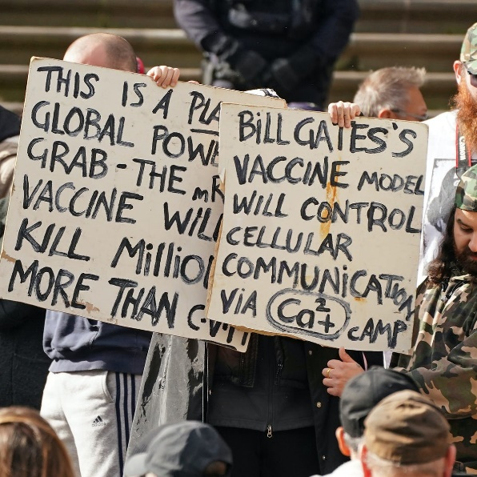
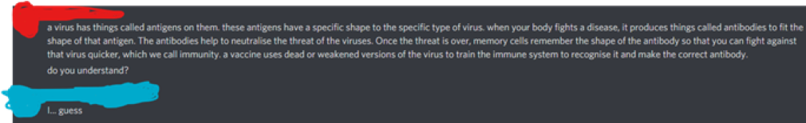

Vaccines... Mind control chips from Bill Gates?
by Jeremy Daniel
The current Covid-19 pandemic has had an enormous impact on our lives, with lockdown forcing us indoors for months, unable to see our friends and family. However, it seems that we are starting to see the light at the end of the tunnel, with the vaccination programmes being proven effective. If we go along the path of mass vaccination, we could see ourselves moving out of our homes on a regular basis soon and returning to daily life. With all this said, why wouldn’t you take the vaccine?
However, there will always be those who refuse to be vaccinated to help our noble cause, those who hinder our world’s recovery from the global pandemic that has affected many countries, leaving more than 4 million dead. Those people are anti-vaxxers.
Who are anti-vaxxers, you may ask? To that I say, get out of your rock. Anti-vaxxers are a growing group of conspiracy theorists who believe that vaccines are harmful and should not be taken at all costs. You can see why this is a problem when trying to vaccinate a nation and achieve herd immunity. Arrogant, selfish people like this could potentially ruin the WHO’s plan for herd immunity from COVID, losing unnecessary lives in the process.
But is there any logic behind an anti-vaxxer? Do they think about both sides of the story before making such a rash decision? Well, I had the exact same question when I decided to interview a normal follower of this group, not a leader, but one of the people. I spoke to one on a social media platform known as Discord.
Discord is one of the largest growing social media platforms as of now, particularly popular with gamers… and conspiracy theorists. So, I found a regular anti-vaxxer on Discord and asked him several questions:
1) Where did you first learn about the anti-vax movement?
2) Why do you believe vaccines are harmful?
3) Are you aware of how vaccines work?
4) What do you think about the wider anti-vax community?
5) Why do you think the anti-vax movement has been growing so much lately?
Here was what he had to say in response to the first question:
“This is my own opinion, nobody imposed this thought upon me, I made the decision to remain un-vaccinated on my own. After I decided not to be vaccinated, I heard about this movement from my mother, as she is interested in medical related topics.”
So most anti-vaxxers indeed made the decision themselves, then heard about the community later.
He then responded to our next question with this:
“Firstly, they do not even work properly, people who have been vaccinated still get the virus. As well as this, people suffer from the vaccine itself, people have died because of this!”
When asked about the blood clots that have been linked to the AstraZeneca vaccine, he replied:
“Blood clots? No idea.”
Let us respond to this one by one. Vaccines are not there to stop you from ever getting infected, they are there to make sure that your immune system can respond if you do get infected. Secondly, the chances of you dying from the vaccine are very slim. Only around 50 people have died from the AstraZeneca vaccine while over 24.6 million people have taken the vaccine. Also, all the deaths have been in people who have had underlying health conditions.
When asked how vaccines worked, he said:
“Not really, I heard that they also produce things like viruses to fight the harmful viruses.”
Oh, boy, I am ready to give a full GCSE Biology answer. Oh wait, it is an antivaxxer. So, I tried my best, and this is what I produced…
When asked about whether he enjoyed the company of anti-vax followers, he said, “It really depends, but most of them are regular people like me and you, they respect each other’s opinions and aren’t very rude to others.” It could, therefore, be said that the community is what brings people to stay as anti-vaxxers.
So finally, I asked why he thought so many people, such as himself, were suddenly becoming vaccine sceptics. He replied, “The majority of anti-vaxxers, me included, are not against all vaccines. Other vaccines have been tried and tested, the Covid vaccine has suddenly come out of nowhere and I’m not risking any dangerous side-effects.”
Do not worry, everyone, the vaccine has been tested before being administered to millions of people throughout the country: they go from cell cultures to animals to humans, then they check if it is safe enough to give to you all.
So now you know why people become anti-vaxxers and why their logic is flawed. Anti-vaxxers have existed since the first vaccines for smallpox were made by Edward Jenner. We should not be too worried, most of the country is on the side of science, reasoning, and logic.
But Jeremy, I am an anti-vaxxer and I do not know what to do now, you may ask. To that I say, get out of your rock. I also say that you should tale the vaccine to protect not just you, but those around you.